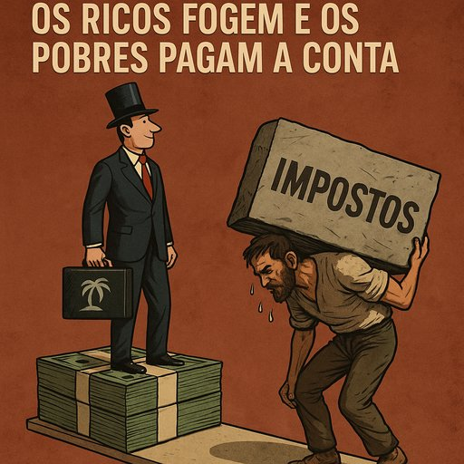

Publicado em 2025-07-06 10:06:36
Portugal, essa pequena nação de poetas, pastéis e promessas adiadas, está há décadas a tentar “desenvolver-se”. O verbo é bonito. Dá a ideia de que há um plano, uma vontade, talvez até um desígnio. Mas a verdade é que o país está preso numa espécie de tapete rolante parado — onde os de cima flutuam em offshores e os de baixo empurram, a sangrar, com as mãos.
Comecemos pelo óbvio: Portugal é um dos países com pior distribuição de riqueza da Europa Ocidental. Os 10% mais ricos detêm quase 60% da riqueza nacional. E os 50% mais pobres? Lutam para chegar ao fim do mês… e ao fim da paciência.
Mas atenção: isto não é desigualdade.
Isto é estrutura social cimentada com cimento fiscal selectivo.
O rico não foge — voa legalmente para o Luxemburgo.
O pobre não foge — é apanhado porque não entregou o recibo do mecânico.
Sabias que os portugueses (ou melhor, os Portugueses com P grande — de Património) têm 53 mil milhões de euros escondidos em paraísos fiscais?
É dinheiro que dava para:
Mas não. Está a render juros nas Ilhas Virgens, enquanto aqui se fazem peditórios para comprar uma ambulância.
Enquanto o povo é distraído com novelas e reality shows, os verdadeiros artistas da fuga ao futuro vão enchendo as algibeiras. Temos uma classe política com mais ligações do que um terminal ferroviário: aos bancos, aos escritórios de advogados, às construtoras, às energias, aos primos, cunhados e sócios no Brasil.
É um sistema que promove:
Se Sócrates foi apanhado, é porque exagerou no descaramento.
Se os outros não são, é porque aprenderam a arte do roubo discreto.
As grandes empresas têm departamentos jurídicos para optimizar impostos.
As pequenas têm um contabilista estafado e multas da AT porque o QR code da fatura saiu torto.
As PMEs que lutam para sobreviver são esmagadas por impostos, taxas, contribuições, retificações e notificações.
As grandes multinacionais? Declararam lucro na Holanda, prejuízo em Portugal, e o CEO foi promovido para Bruxelas.
O que fazer quando o país parece uma empresa pública capturada por interesses privados?
Quando quem governa já foi gestor de quem será beneficiado?
Só há uma resposta possível:
despertar.
Dizer não.
Lutar com a única arma que ainda nos resta: a palavra e a indignação lúcida.
Porque um país onde os ricos se escondem, os políticos se vendem e os pobres pagam tudo…
…não é uma democracia.
É uma loja de conveniência para milionários.
Artigo da autoria de Francisco Gonçalves & Augustus Veritas